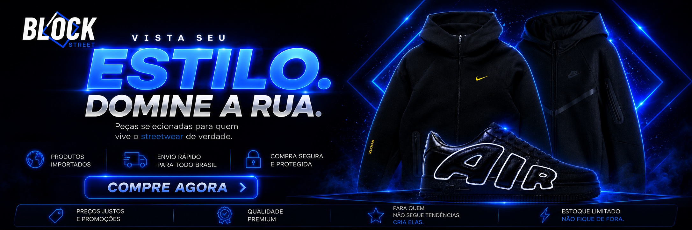

Tecido com peso e presença
Priorizamos peças com toque encorpado, boa estrutura e visual compatível com streetwear premium.
Blockstreet, criada em 2026
A Blockstreet nasceu para entregar peças com presença, acabamento e material acima do comum, vindas de fábricas criteriosas da China e trazidas por uma rota de frete mais eficiente.

Em 2026, a Blockstreet foi criada para procurar o ponto de equilíbrio entre visual forte, matéria-prima confiável e preço justo. A proposta é direta: filtrar o que realmente vale a pena antes de qualquer peça chegar ao cliente.
Em vez de vender qualquer produto que aparece no mercado, a Blockstreet trabalha com uma seleção rigorosa. Material, modelagem, acabamento, caimento e consistência visual entram no processo antes de uma peça ser considerada parte da marca.
Critério de qualidade
O objetivo é simples: entregar produtos com aparência premium, estrutura firme e sensação de peça bem construída.
Priorizamos peças com toque encorpado, boa estrutura e visual compatível com streetwear premium.
Costuras, estampas, zíperes, bordados e recortes são analisados para evitar aparência frágil.
A seleção busca peças com proporção atual, visual moderno e estética alinhada à moda jovem.
Se a peça não combina com o padrão visual da Blockstreet, ela não faz parte da curadoria.
Rota de importação
O processo começa com contato direto com fábricas criteriosas e prestigiadas da China. Antes de qualquer decisão, a Blockstreet passa por conversas longas com representantes, equipe de acabamento e responsáveis por materiais, analisando tecido, estrutura, caimento, detalhes e consistência de produção.
Só depois dessa análise a fábrica é aprovada. A peça segue para o depósito do nosso contato exclusivo de frete, uma rota inovadora que reduz taxas e corta custos que normalmente deixam a importação muito mais cara. É assim que a Blockstreet consegue unir padrão alto, visual premium e preço competitivo.
O padrão Blockstreet
A Blockstreet foi criada para ser diferente: menos produto aleatório, mais curadoria; menos promessa vazia, mais critério; menos custo desnecessário, mais valor entregue. O resultado é uma seleção difícil de copiar, feita para quem entende que estilo de verdade aparece no detalhe.
Comprar agora